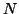
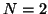

Two parameters are supplied: a logical (False or True) and the number of points

. If the first variable is False, then no interpolation of the tip force is done, it will be calculated at each tip position by running full SciFi ionic relaxation calculation. If, however, the first parameter is True, then an interpolation of the force between two nearest known values (for vertical positions of the tip only) will be done, atomic relaxation will not be performed saving computer time.The parameter specifies the number of nearest forces to be used in the interpolation (only

is presently implemented).
Example: Force_Test 0.01